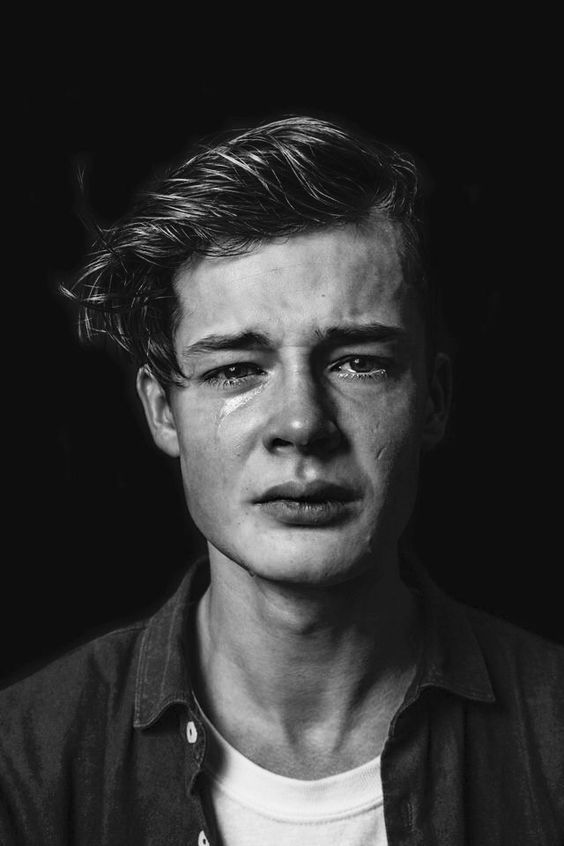

About Nayimova Guliyashnar
My name is Nayimova Guliyashnar and i am curious, hyperactive and introverted.
My classes this semester
- 202101-SOC2060 Circuit and Lab
- 202101-GEN2022 Academic English 4
- 202101-MSC2030 Engineering Mathematics
- 202101-NTS3031 The New History of Uzbekistan, Philosophy, Basics of Spirituality and Jurisprudence-1
- 202101-SOC2040 System Programming
- 202101-SOC2060 Computer Architecture
- 202101-SOC2110 Internet Programming
My favorite TV shows
- Dark - A family saga with a supernatural twist, set in a German town, where the disappearance of two young children exposes the relationships among four families.(IMDB)
- Skam - The story of young teenagers of upper secondary school in Oslo, and their troubles, scandals and everyday life.(IMDB)
- Love, Death & Robots - A collection of animated short stories that span various genres including science fiction, fantasy, horror and comedy.(IMDB)
My moods
Happy:
Sad: 
Pirzoda is really obsessed with german culture, she likes japanese anime as well.